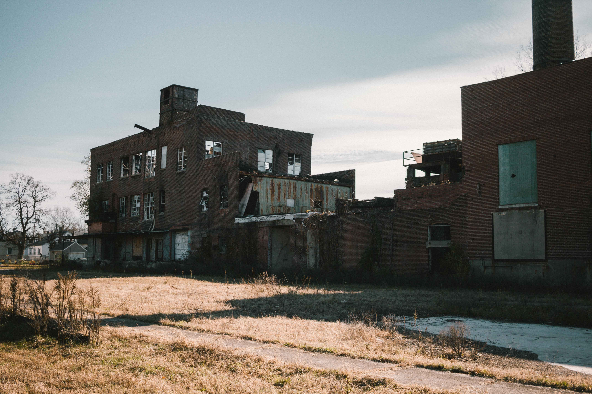

B. E. BOCZULAK
CLEVELAND
Business is not as usual.
It never is around here.
The status-quo is not good enough.
I design experiences that elevate companies
and teams into a new strata.
Strong core values create great brands.
Let's create content that highlights
what makes your company different.
The history of Hamilton is complex and not linear. The route for this walking tour attempts to follow chronologically the development of Hamilton as well as the history. We will begin at the water, as that was the place where the earliest development occurred with the construction of Fort Hamilton. Then, we will explore the early development and history of Hamilton at the Butler County Courthouse and central business district. Next, we will explore a diverse neighborhood called the German Village Historic District. We will then look at an abandoned factory and explore the complicated relationship that Hamilton has with manufacturing. We will then visit a brand-new park that is bringing new life into the city and look at a new development that will change the face of the city.
The Great Miami River

The story of Hamilton, like most places, begins at the water. The Great Miami River is a tributary of the Ohio river that runs from the Dayton area to southeastern Ohio, outside of Cincinnati (Ohio EPA, nd). It’s no coincidence that a city like Hamilton is centered at a waterway of this magnitude. The river was a source of life that enabled much of the early growth of the city. In the landscape of the river we can see the that the edges of the river have been supported and dredged, this suggests that the river still has some modern uses. Although, I would imagine that the types of boats travelling on the river are not that large because the bridge only leaves about 15-20ft of clearance above the waterway. The Great Miami River also fed the water for the Miami and Erie Canal starting in the 1830s and peaking in the 1850s. The canal in combination with the river contributed to much of the early growth of Hamilton. The former towpath for the canal is now a multipurpose trail that can be used for bike travel or recreation (Touring Ohio, nd) .
Fort Hamilton
The history of Hamilton begins with Fort Hamilton. A plaque stands here today where the fort originally stood. The fort was one of many along the Great Miami River designed to be a supply depot for American expeditions against Native Americans living along the Great Miami River and other surrounding streams. This was the first American settlement in present-day Hamilton, being completed in 1791 (Ohio History Connection, nd). The fort and the subsequent city were named after Alexander Hamilton, a friend of General Arthur St. Clair who was responsible for constructing the original fort. The fort is long gone. It was dismantled after the American victory against the natives following the Battle of Fallen Timbers in 1794. The Powder House was saved from demolition and stood until 1913 when a flood destroyed much of the town. Presently, at the site of the for the Soldiers, Sailors and Pioneers Monument stands. It was constructed in 1902 to commemorate the men and women of Butler County who served in the Revolutionary, Indian, Spanish American, 1812, Desert Storm, and Mexican Wars as well as to commemorate early settlers of Butler County (Butler County Information Services, 2006). The vast marble structure contains over 4,500 names of those who have served our country. From the steps of the monument, you can see a clear view eastward down High Street at downtown Hamilton.

View down High Street from the steps of the monument, at the former site of Fort Hamilton.
Butler County Courthouse
The next stop on our tour is just down the block at the Butler County Courthouse. The aforementioned canal system and railroads brought many industries to Hamilton in the early to mid 1800s. Hamilton turned into a small, but mighty producer of manufactured goods and was a hub for transporting resources from southern Ohio and eastern Indiana to other parts of the country. This growth of industry brought many people to Hamilton looking for work. The population increased rapidly with the railroads and the canals. In 1880, Hamilton had a population of over 12,000. This population growth also triggered a growth of infrastructure. The Butler County Courthouse is the perfect manifestation of these infrastructure investments. It was constructed between 1885-1889 in the Second Empire style. The courthouse is four stories and features a mansard roof and many ornate window decorations (Butler County Visitors Bureau, nd). It sits on a plot of land that is slightly elevated from the normal road height, likely to symbolize the importance and significance of the structure. The courthouse is primarily surrounded by other government buildings. The post office built later sits behind the courthouse. The Butler County Administrative Center sits across High street, in front of the courthouse. This structure certainly stands out in the landscape as a place of importance. Later in the tour, we will look at houses in neighborhoods built around the time of this courthouse, to get a better understanding of how people were living at the time.
Central Business District
The next stop on our tour is only a few blocks away in the central business district of Hamilton, Ohio. This is where the tallest buildings and most dense buildings in the city reside. The industrial boom in the late 1800s and early 1900s creates a need for other white-collar support services such as corporate headquarters, lawyers, financial institutions, and administrative offices. This is the area in Hamilton where these institutions established themselves. The First National Bank and Trust Company buildings is located at the corner of Third Street and High Street. This building stands out in the landscape as one of the older and more prominent buildings on High Street. Information about the bank and the building itself is sparse. The company was founded in 1863 and was dissolved in 1980, the assets and the building are now owned by First National of Cincinnati. The building the bank was housed in was built in 1930, this is confirmed by the inscription on the building as well as the architectural style. The structure is a beautiful example of Art Deco architecture because it features geometric patterns, aluminum window surrounds, and an emphasis on vertical space. This structure was expensive to produce and would have been a symbol of prosperity in the city, to require such a grand and large bank. This makes a statement about place and people. Also, in this district lies former department stores and other retail buildings. Today, these buildings have other uses as the retail business has moved online and to the suburbs. Some of the newest structures in this area are One Renaissance Center and the Butler County Government Services Center. These buildings were constructed in 1999 and serve as the offices for many government services in Hamilton and Butler County. The Butler County Government Services Center is designed in the postmodern architecture style, which still had popularity in the late 1990s and early 2000s. This is identified by the exaggerated entranceway and the decorated window frames (Athanvale, nd). This architectural style helps blend these newer buildings with the existing buildings in the landscape. Today, there is little new construction in this area, however, many formerly vacant storefronts are being converted into trendy retail destinations.
German Village
Our next stop is just a few blocks down Third Street in German Village. This is a dense neighborhood that began around the time that the canal was built, in the mid-1830s. This was the first centralized development in Hamilton since Fort Hamilton was built in 1791 (Lane Public Library, nd). Walking around the neighborhood, the diversity in architecture styles makes this place unique. There are many different styles of houses with a majority of them being constructed between the 1830s and 1930s. This neighborhood was a mix of white-collar and blue-collar workers which is reflected in the architectural styles of the homes. Some are ornate Italianate or Queen Anne style homes while others are more subdued styles like Folk Victorian. The German Village neighborhood is very central to many of the significant places in Hamilton. To the north lives the Niles Tool Works plant which was one of the nation’s leading centers of machine tool production in the 19th and 20th centuries. To the east lives more factories and railroad tracks. To the west is the Great Miami River and former canal which we discussed earlier. To the south is High Street and the central business district. The proximity to all these places makes it apparent why this was one of the first major settlements in the area. Today, the neighborhood is in a bit of a resurgence. There is major emphasis on the historic value in the neighborhood. There are decorative entranceways (as shown in the picture) and the street in front of the library has been beautified and made more pedestrian friendly. There seems to be more demand for housing and retail in the area. When I was visiting there was work being done to a retail space and older houses were being fixed and listed on the market. It seems that people desire a historic and walkable neighborhood. The neighborhood borders the brand-new Marcum Park, which we will visit later in the walk.
View of a house in the German Village Historic District. This residence appears to be of the Italianate style and is currently used as a salon.
Industrial Era in Hamilton

The next stop on our tour is just a few blocks west to the intersection of Martin Luther King Boulevard. At the corner here, we can get a good view at the abandoned Beckett Paper Company factory. This is just one of many abandoned factory buildings in Hamilton with proximity to the German Village neighborhood. The paper company began in 1887 and was known for many innovations in the paper industry including being one of the first to develop colored cover papers. The company was also the printer of choice for the popular McGuffey Readers in the 19th century, written William Homes McGuffey who was a professor at Miami University (Lane Public Library, nd). The availability of cheap hydro power made this factory and others in the area cheaper to run than in most other American cities. The largest part of the building that is visible from the corner was built in 1905. The flood of 1913 destroyed much of the machinery inside and the plant had to be shut down for six months to repair the damages. The plant operated until the 1980s when like most manufacturing companies, the parent company began to run into financial trouble due to increased trade with foreign paper companies. The history is complicated after that and the physical building changed hands several times. Today, it sits vacant after exchanging hands a few times. This is the fate of many of the industrial buildings in Hamilton. Our last stop on this walk around Hamilton will focus on how one company is utilizing the old infrastructure to create something new.
Marcum Park

The next stop on our walk around Hamilton is one of the newest additions to the city, Marcum Park. This is a six-acre park that borders the central business district, the Great Miami River, and the German Village neighborhood. The park features an amphitheater for summer performances, greenspace, a sand play area for children, and a splashpad. The space had provided a place for the people of Hamilton to gather, explore, and relax. The park also provides link to the nearby Greater Miami River Recreational Trail which follows the river. According to the architects, the park was designed to provide space for a wide range of activities. There are places for play, picnic, concerts, and more (American Planning Association, 2018). The park is located on the former site of Mercy Hospital, but the land was left vacant after the hospital closed in 2006 (Rutledge, 2017). This left the land vacant and ripe for development. Following the construction of the park, a developer constructed new apartments that border the southside of the park. This was the first new major new housing development in downtown Hamilton in decades. This is possibly a signal of further new developments to come, given the success of the park and the apartments.
This is a view of the sand play area. In the summertime, water flows down this artificial river and children can play.
View of Marcum Park trees
View of brand new residential apartments that border Marcum Park
Sports Complex
The last stop on our tour is a stop down the road from Marcum Park, to a view across the river at the former Champion Paper Mill. The Champion Paper Mill in Hamilton was constructed in 1902 and by 1910 it was the largest coated-paper mill in the world (Fischer, nd). It continued operation and expanded a few times but shut down in 2012 after years of struggle. The story of this factory follows that of many of the other factories in Hamilton, shutting down after being squeezed out of business by foreign competition. However, this factory and land is seeing new life as a sporting complex. Developers are transforming the property into Spooky Nook sports complex, which when it is finished in 2021 will be the largest indoor sporting complex in North America (Schupp, 2018). The project is expecting to bring over one million visitors per year to Hamilton. The project will also contain a 200-room hotel and a large indoor convention space. This project is expected to bring more retail and more businesses into the core of Hamilton. Time will tell how successful this project is, but right now it looks very promising. Demolition and construction are in full swing. This is where our tour ends, because this sporting complex is the face of the future of Hamilton.
Gate 7 outside of the former Champion Paper Mill
Historic Photos
To conclude this walking tour, I decided to include historical photos of Hamilton. The photograph above was taken from West Hamilton with a view of downtown. In this photograph, many of the places we visited are visible. The Great Miami River and railroad bridge are visible in the foreground. In the city the Soldiers, Sailors and Pioneers Monument and the Butler County Courthouse are distinct landmarks. In the background, smokestacks from the factories surrounding the city penetrate the sky. This photo was taken in the 1930s.
Several times in this tour, I mentioned the Flood of 1913. This devastated the city and forced most to rebuild. Many of the historic homes in the German Village have plaques on the exterior that denote where the water levels hit on the house. The photo above was again taken from West Hamilton showing the water levels on the Great Miami River. The water is passing over the bridge that connects Main Street and High Street. The bridge was destroyed and was rebuilt in 1916.
Looking Forward
This field guide explores many aspects of Hamilton, Ohio. We began at the water, the roots of the city and the site of the first development. We traveled in-land and explored some notable landmarks and the story of their development. We then ended at the site of a new sports complex that will fundamentally change Hamilton. The city of Hamilton has seen its highs and lows over the years, but the prevailing theme is that the city will reinvent itself to survive. The city is not a static environment, it is always changing and the cycle of construction, abandonment, and rebirth is natural and encouraged. Today, much of the landscape is being modified to fit the modern world and buildings are finding new purpose and identity. The existing infrastructure means great opportunity for investors and developers looking to create something new, and the people of Hamilton are eager for quality employment. I suspect good things are on the horizon.
References/Sources
2019 - Benjamin Boczulak, GEO 201 Miami University
All photos copyright Benjamin Boczulak 2019, except those in 'Historic Photos' segment, rights are owned by Ohio History Connection and are used for educational purposes only.